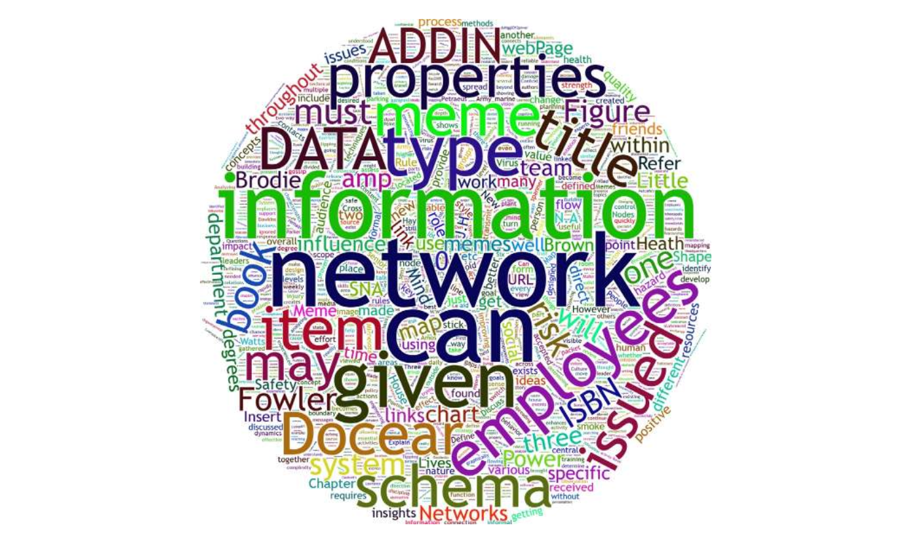
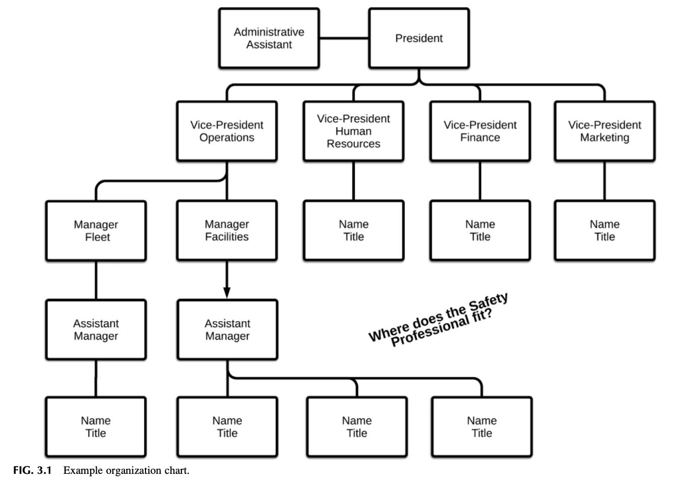
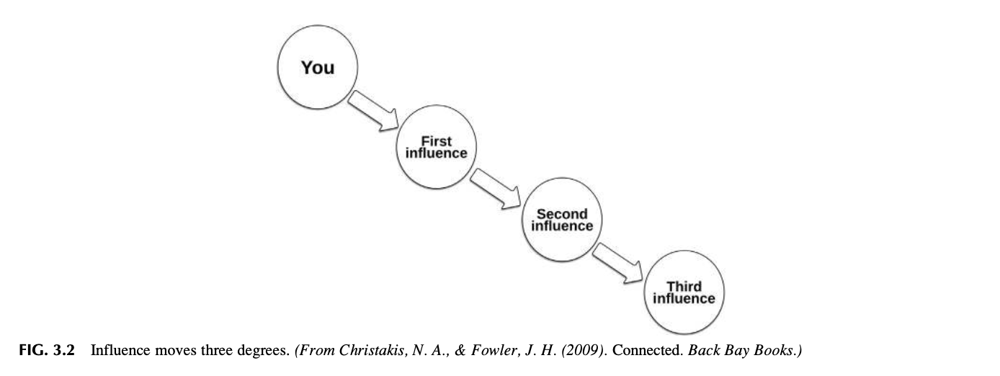
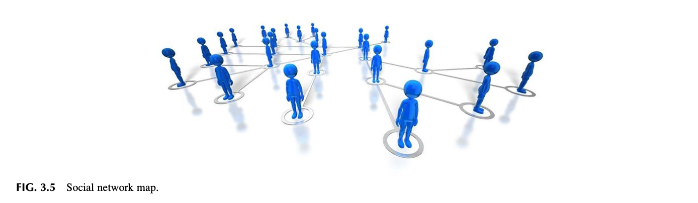
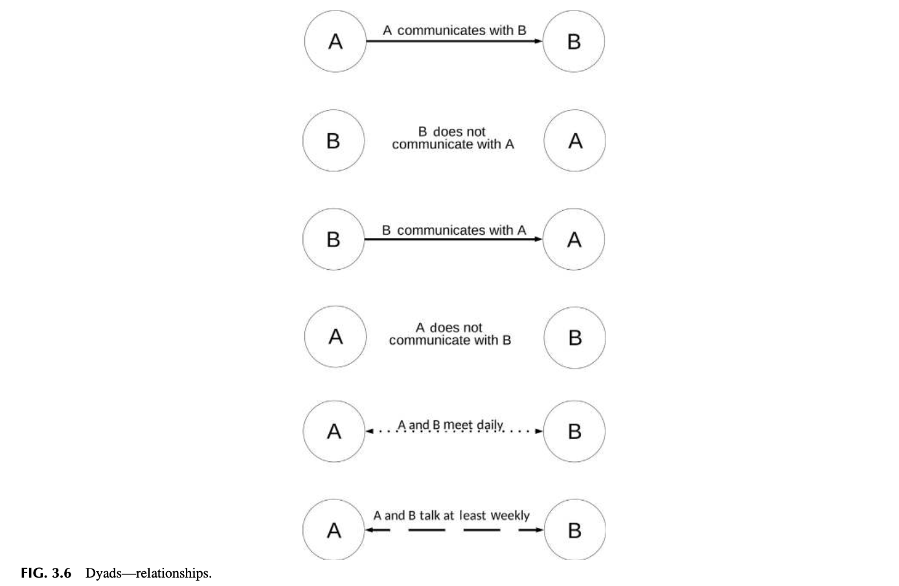
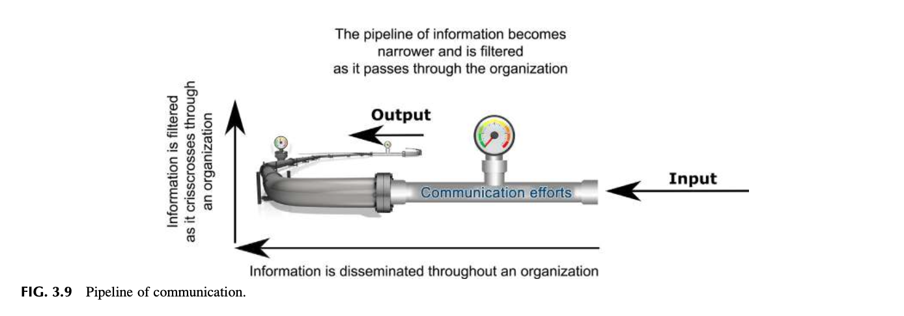

Chapter 3 Analyzing and Using Your Network
📌 1. INTRODUCTION (도입)
안전문화를 구축하고 확산시키는 과정은 단순히 위계적인 공식 규정을 전파하는 작업이 아닙니다. 실제 현장에서 안전에 대한 지각과 태도는 조직 구성원들 간의 비공식 사회적 연결망(Informal Social Network)을 통해 전염병이나 바이러스처럼 빠르게 복제되고 확산됩니다. 안전 전문가는 조직 내 네트워크의 역학을 분석하고 이를 능동적으로 활용할 줄 알아야 합니다.
📊 1.1 제3장의 핵심 학습 목표
- 공식 조직도(Formal Org Chart)와 비공식 네트워크(Informal Network)의 근본적 차이와 상호작용을 규명한다.
- 사회 연결망 이론(Social Network Theory)의 기본 개념(노드, 링크, 결속도)을 이해한다.
- 안전 밈(Safety Memes)이 조직 내에서 복제되고 전파되는 메커니즘을 분석한다.
- 사회 연결망 분석(SNA) 및 매핑 기법을 습득하여 조직 내 4대 핵심 역할자(중앙 연결자, 경계 스패너, 정보 브로커, 주변인)를 식별한다.
- 막힘없는 위험 정보 유통을 위한 소통 파이프라인(Communication Pipeline)을 구축한다.
---
🌐 2. THE IMPORTANCE OF NETWORKING (네트워크의 전략적 중요성)
안전 전문가는 고립된 규제 집행관이 아니라, 조직의 모든 계층과 부서를 잇는 '최고 연결 책임자'가 되어야 합니다.
- 자원과 정보의 흐름 통제:
조직 내에서 권력과 자원, 그리고 위험 정보는 공식 계통도보다 친밀감과 신뢰에 기반한 사회적 네트워크를 통해 훨씬 빠르게 유통됩니다.
- 신뢰 자산(Trust Asset)의 형성:
강력한 네트워크를 구축한 안전 전문가는 위기 상황 발생 시 공식 결재 라인을 단축하여 최고경영진과 현장에 즉각적인 안전 조치를 단행할 수 있는 비공식적 영향력(Informal Influence)을 획득합니다.
---
👥 3. INFORMAL NETWORKS (비공식 네트워크의 위력)
조직에는 두 가지 조직도가 공존합니다:
- 공식 조직도 (Formal Organization Chart): 회사의 직급, 부서 배치, 보고 체계를 규정한 정적 구조.
- 비공식 네트워크 (Informal Network): 커피 타임, 흡연실, 동호회, 동향 모임 등 인간적 유대에 기반한 동적 연결망.
- 위험 정보의 전파 속도:
현장의 유해위험요인이나 리스크에 대한 불만은 공식 안전 보고서보다 비공식 네트워크를 타고 훨씬 먼저, 그리고 왜곡 없이 공유됩니다. 안전 전문가가 비공식 네트워크와 단절되어 있다면 현장의 진짜 위험을 결코 알 수 없습니다.
---
🏢 4. ANALYZING THE ORGANIZATIONAL CHART TO ASSESS A NETWORK (네트워크 진단을 위한 조직도 분석)
공식 조직도를 분석할 때는 안전 부서의 물리적·위계적 위치를 비판적으로 검토해야 합니다.
---
🖼️ [그림 3.1 상세 분석] 전형적인 기업 조직도와 안전 기능의 위치

**[그림 3.1 상세 보충설명: 조직도 속 안전 부서의 고립 구조]**
* **구조 분석**: 최고경영자(CEO) 아래 운영본부(COO)나 인사본부(HR) 하위의 작은 단위로 안전팀이 편제되어 있는 전형적 구조.
* **한계점**: 안전 부서가 생산이나 인사 부서의 하위 팀으로 종속되어 있을 경우, 생산 목표와의 충돌 시 안전 의견이 경영진에게 직보되지 못하고 중간 관리자에 의해 필터링(은폐)될 위험이 극대화됩니다.
---
🔍 [Observation 1] 조직도와 실제 소통의 괴리
- 조직도 상으로는 안전 관리자가 모든 부서에 권고를 내릴 수 있는 것처럼 보이지만, 실제로는 타 부서장들과의 인간적 신뢰 네트워크가 없으면 서류 한 장 통과시키지 못하는 무력한 상태에 빠지게 됩니다.
---
⚖️ 5. NETWORKING CONSIDERATIONS (네트워크 구축 시 고려사항)
네트워크를 확장할 때는 사내 정치(Internal Politics)와 인간관계의 복잡성을 계산에 넣어야 합니다.
- 상호 호혜성 (Reciprocity):
안전팀이 타 부서의 업무(품질 향상, 생산성 병목 해소)를 적극적으로 도와줄 때, 타 부서 역시 안전팀의 예방 정책에 적극 협조하게 됩니다.
- 평판 관리:
안전 관리자의 일관성 없는 태도나 약속 불이행은 비공식 네트워크를 통해 급속히 확산되어 전사적 신뢰를 순식간에 붕괴시킵니다.
---
🔍 [Observation 2 & 3] 신뢰와 평판의 파급력
- 사소한 안전 요청이라도 성심성의껏 해결해 준 경험이 현장 작업자들의 입소문(비공식 네트워크)을 타면서, 안전팀에 대한 현장의 전폭적 지지와 협조가 형성된 실제 사례를 입증합니다.
---
🎯 6. REALITY CHECK INDICATOR (현실 점검 지표)
안전 전문가가 자신이 조직 내에서 실질적인 네트워크 중심에 있는지 점검하는 4대 자가 진단 지표입니다:
---
💡 [Lesson Learned 1] 현실 점검 4대 질문
- 현장 직원이 유해위험요인을 발견했을 때, 복잡한 서류 절차 없이도 나에게 즉시 개인적으로 연락을 취하는가?
- 생산 및 엔지니어링 부서가 새로운 공정을 도입할 때, 기획 초기 단계부터 나를 찾아와 사전 조율을 거치는가?
- 최고경영진이 중대한 사업 결정을 내릴 때 나의 안전 리스크 분석 의견을 경청하는가?
- 나는 사내의 비공식 오피니언 리더들과 주기적으로 격의 없는 대화를 나누고 있는가?
---
📐 7. DEFINING THE BASICS OF NETWORKING THEORY (사회 연결망 이론의 기본 개념)
사회 연결망 이론(Social Network Theory)은 인간 집단의 관계를 수학적·과학적으로 분석하는 틀입니다.
- 노드 (Node): 네트워크 안의 개별 구성원(개인, 팀, 부서).
- 링크/타이 (Link/Tie): 노드 간의 상호작용 및 관계성(소통 빈도, 신뢰도, 정보 교환).
- 결속도 (Network Density): 구성원들이 얼마나 촘촘하게 서로 연결되어 있는가를 나타내는 척도.
---
🖼️ [그림 3.2 상세 분석] 3단계 영향력 법칙 (Three Degrees of Influence)

**[그림 3.2 상세 보충설명: 크리스타키스 & 파울러(2009)의 3단계 파급 메커니즘]**
* **1단계 (Direct Tie)**: 나의 직접적인 동료 (강력한 직접 영향).
* **2단계 (Friends' Friends)**: 동료의 동료 (간접 영향력 유지).
* **3단계 (Three Degrees)**: 동료의 동료의 동료 (사회적 전염의 유효 한계선).
* **실무적 함의**: 안전 전문가가 현장의 핵심 리더 몇 명에게 올바른 안전 지각을 심어주면, 그 영향력은 3단계를 거쳐 수백 명의 전사 구성원에게까지 바이러스처럼 파급됩니다.
---
🧬 8. THE SAFETY INFORMATION PACKET—EPIDEMICS, VIRUSES, AND MEMES (안전 정보 패킷: 전염병, 바이러스, 그리고 밈)
안전 정보와 태도는 마치 생물학적 바이러스나 전염병처럼 네트워크를 타고 이동합니다.
- 밈(Meme)의 개념:
리처드 도킨스(Richard Dawkins, 1976)가 《이기적 유전자》에서 제시한 개념으로, 유전자가 생물학적 정보를 복제하듯 모방(Imitation)을 통해 뇌에서 뇌로 전달되는 문화적·사고적 정보 단위입니다.
- 안전 밈의 전파:
"안전모 턱끈을 매지 않아도 괜찮다"는 위험한 태도 역시 하나의 강력한 밈으로 조직 내에 복제되어 순식간에 집단적 관행으로 고착화됩니다.
---
🖼️ [그림 3.3 & 3.4 상세 분석] 마음에서 마음으로 이동하는 밈과 연결선


**[그림 3.3 및 3.4 상세 보충설명: 밈의 뇌 간 전파 경로와 노드 간 연결선]**
* 단 6명의 사람이 모여도 형성될 수 있는 잠재적 연결선은 기하급수적으로 증가하며, 안전 밈은 이 연결선을 타고 증폭됩니다.
---
🔍 9. REALITY VERSUS PERCEPTION (객관적 현실 대 집단적 지각)
조직의 안전 행동을 지배하는 것은 엔지니어링적인 '객관적 현실(Reality)'이 아니라, 네트워크 속에서 집단적으로 형성된 '주관적 지각(Perception)'입니다.
- 지각의 지배력:
경영진이 아무리 훌륭한 안전 제도를 구축했다고 믿어도(현실), 직원들이 네트워크 속에서 "그건 우리를 감시하고 처벌하기 위한 수단이다"라고 지각하면 제도는 완전히 무력화됩니다.
---
🗣️ 10. COMMON SAFETY MEMES (조직 내에 떠도는 흔한 안전 밈 분석)
조직 내에는 안전문화를 파괴하는 독성 밈과 이를 치유하는 건강한 밈이 대립합니다:
- 치명적인 독성 밈 (Toxic Memes):
- "사고는 운이 나빠서 일어나는 것이다."
- "규정을 100% 다 지키다가는 납기를 맞출 수 없다."
- "안전팀은 현장을 모르는 탁상공론 집단이다."
- 바이러스처럼 확산시켜야 할 건강한 레질리언스 밈 (Healthy Memes):
- "위험을 발견하면 누구나 당당하게 작업을 중지할 권리가 있다."
- "우리는 동료의 등 뒤를 지켜주는 형제다 (Brother's Keeper)."
- "아차사고 보고는 조직을 살리는 최고의 선물이다."
---
🔬 11. SOCIAL NETWORK ANALYSIS (사회 연결망 분석, SNA의 학술적 방법론)
조직 내 비공식 네트워크를 정량적·시각적으로 분석하는 현대 경영학 및 행정학의 첨단 방법론입니다.
- 중심성 지표 (Centrality Metrics):
- 연결 정도 중심성 (Degree Centrality): 한 사람이 얼마나 많은 사람과 직접 연결되어 있는가.
- 매개 중심성 (Betweenness Centrality): 부서와 부서 사이의 정보 흐름 길목을 얼마나 통제하고 있는가.
- 근접 중심성 (Closeness Centrality): 전사 구성원들에게 얼마나 빠르게 정보를 전달할 수 있는가.
---
🗺️ 12. SOCIAL NETWORK MAPPING (소셜 네트워크 지도 작성과 시각화)
구성원 간의 실제 소통 데이터를 수집하여 2차원 네트워크 맵을 구축합니다.
---
🖼️ [그림 3.5 상세 분석] 소셜 네트워크 맵과 정보의 흐름

**[그림 3.5 상세 보충설명: 조직의 숨겨진 권력과 정보 허브 시각화]**
* 공식 직급과 무관하게 네트워크 중심에 자리 잡고 있는 핵심 노드들을 시각적으로 명확히 규명합니다.
---
🎭 13. DEFINING THE ROLES IDENTIFIED BY THE NETWORK MAP (네트워크 지도에 나타난 4대 핵심 역할)
소셜 네트워크 분석(Christakis & Fowler, 2009)을 통해 식별되는 4대 유형의 인물들:
---
🖼️ [그림 3.6, 3.7, 3.8, 3.9 상세 분석] 4대 핵심 역할 모델




| 역할자 유형 | 네트워크 상의 위치 및 특성 | 안전문화 혁신에서의 실무 전략 |
|---|---|---|
| 1. 중앙 연결자 (Central Connectors) | 수많은 사람들과 직접 연결된 정보의 거대한 허브(Hub) | 안전 챔피언으로 임명하여 새로운 안전 방침을 전파하는 진원지로 활용 |
| 2. 경계 스패너 (Boundary Spanners) | 상이한 부서(생산-안전-품질) 간의 장벽을 자유롭게 넘나드는 가교(Bridge) | 부서 간 사일로를 타파하고 안전 협업을 이끌어내는 핵심 파트너 (Lesson Learned 2) |
| 3. 정보 브로커 (Information Broker) | 전문 지식을 쥐고 적재적소에 유통시키는 지식의 수문장(Gatekeeper) | 최신 리스크 분석 기법과 법률 지식을 큐레이션하여 조직에 공급 (Observation 4) |
| 4. 주변인/독불장군 (Peripheral People) | 네트워크 외곽에 홀로 고립되어 있는 외톨이(Mavericks) | 최신 안전 지침에서 소외되어 사고 위험이 가장 높으므로 선제적 포섭 필요 (Observation 5) |
---
🔄 14. PIPELINE OF COMMUNICATION (소통의 파이프라인과 우회 소통망)
위험 정보는 단절 없이 흐르는 고속 파이프라인처럼 설계되어야 합니다.
---
🖼️ [그림 3.10 상세 분석] 소통 파이프라인과 우회 경로

**[그림 3.10 상세 보충설명: 긴급 위험 정보의 우회 전달 (Short-Circuiting)]**
* 공식 계통이 관료주의로 막혔을 때, 안전 네트워크를 통해 최고 의사결정권자에게 직보할 수 있는 비상 우회 밸브의 필요성을 입증합니다.
---
📝 15. SUMMARY (요약 및 핵심 결론)
- 안전문화는 공식 조직도보다 비공식 사회 연결망(Informal Networks)을 통해 훨씬 강력하게 전파됩니다.
- 안전 행동과 신념은 모방을 통해 뇌에서 뇌로 복제되는 '안전 밈(Safety Memes)'의 형태로 작동합니다.
- 크리스타키스와 파울러의 3단계 영향력 법칙에 따라, 핵심 리더의 올바른 안전 실천은 3단계 너머의 동료에게까지 전염됩니다.
- 안전 전문가는 스스로 '경계 스패너(Boundary Spanner)'이자 '정보 브로커'가 되어 부서 간 사일로를 허물고 고립된 주변인을 적극 포섭해야 합니다.
---
❓ 16. CHAPTER REVIEW QUESTIONS (복습 문제 10문항 정밀 분석)
- 공식 조직도와 비공식 네트워크의 차이: 두 체계가 안전 정보 유통 속도와 진실성에 미치는 상이한 영향은?
- 크리스타키스 & 파울러의 3단계 영향력 법칙: 개인의 안전 행동이 조직 전체로 파급되는 수학적·사회적 원리는?
- 안전 밈(Safety Meme)의 복제 메커니즘: 현장의 불안전한 지름길(Shortcut) 관행이 어떻게 밈처럼 번져나가는가?
- 사회 연결망 분석(SNA)의 3대 중심성 지표: 연결 정도, 매개, 근접 중심성이 안전 리더 발굴에 기여하는 바는?
- 중앙 연결자(Central Connector)의 활용 방안: 허브 역할을 하는 현장 오피니언 리더를 안전 파트너로 포섭하는 전략은?
- 경계 스패너(Boundary Spanner)로서의 안전 전문가: 부서 간 사일로를 넘나들며 협업을 이끌어내는 소통 기법은?
- 주변인(Peripheral People)의 잠재 리스크: 네트워크 외곽에 방치된 작업자가 중대재해를 유발하는 메커니즘과 대책은?
- 정보 브로커(Information Broker)와 큐레이션: 전문 안전 정보를 비즈니스 언어로 가공하여 공급하는 방법은?
- 소통 파이프라인과 우회 경로(Short-Circuiting): 급박한 위험 상황에서 공식 결재 라인을 단축하여 직보하는 원칙은?
- 현실 점검 4대 지표(Reality Check Indicators): 안전 전문가 자신의 네트워크 영향력을 스스로 평가하는 기준은?
---
📚 17. BIBLIOGRAPHY (참고 문헌)
- Christakis, N. A., & Fowler, J. H. (2009). Connected: The Surprising Power of Our Social Networks and How They Shape Our Lives. Back Bay Books.
- Cross, R., & Parker, A. (2004). The Hidden Power of Social Networks: Understanding How Work Really Gets Done in Organizations. Harvard Business School Press.
- Dawkins, R. (1976). The Selfish Gene. Oxford University Press.
- Granovetter, M. S. (1973). The Strength of Weak Ties. American Journal of Sociology, 78(6), 1360-1380.
- Rogers, E. M. (2003). Diffusion of Innovations (5th ed.). Free Press.